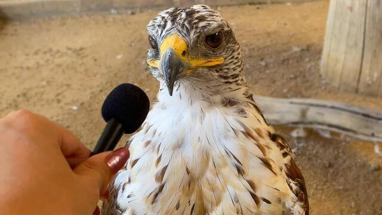
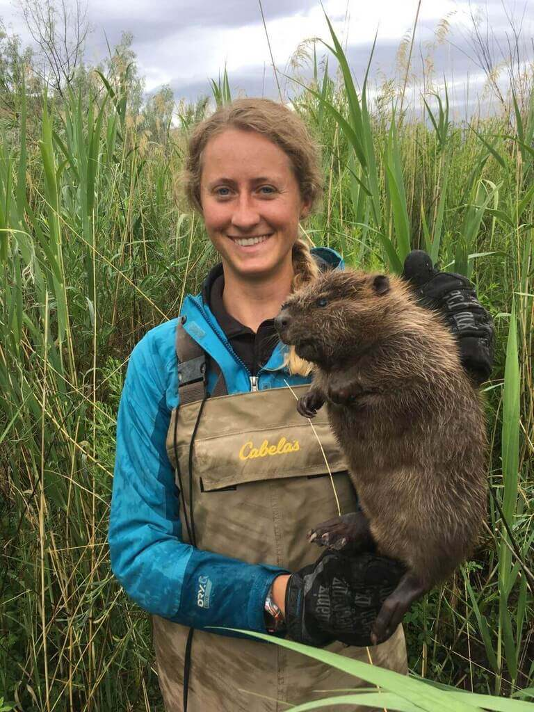
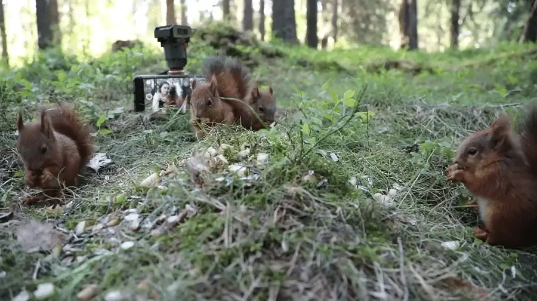
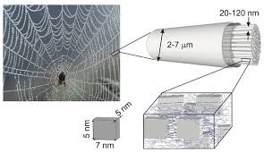
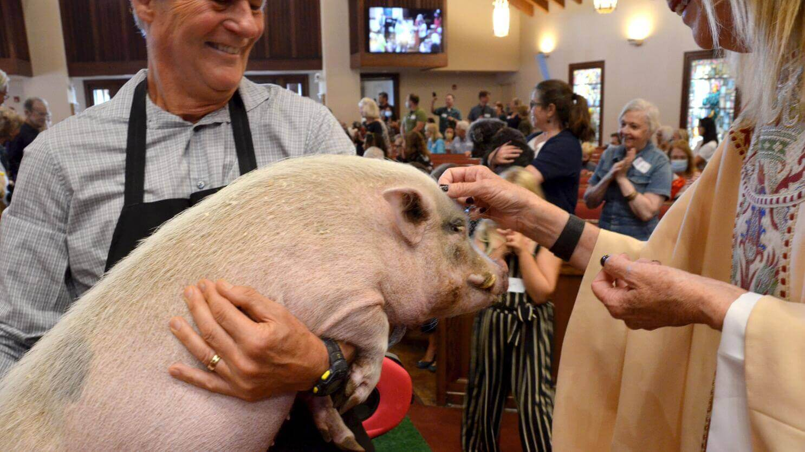

Zazu's thoughts on the current climate

Its made it hard to make the trip back to the west
-Zazu
Bernice's thoughts on discontinuing the penny
Woof
-Bernice
Humans and beavers working together

Humans have to agree with beavers on how to use trees for wood. In 20xx, beavers taught people how to build effective dams with select wood that causes minimal harm to the surrounding environment.
Organization leaking nut coordinates, causing predicted decline of forests

Squirrels often forget where they bury their nuts, allowing for forests to regenerate. Squirrel enthusiasts, calling themselves "nutters," have been found communicating with nuts in unknown dealings with squirrels.
We're just wanted to reclaim what was our's
-Squirrelnelius the third
Spiders and humans discuss silk distribution and collection

Spiders have agreed to share silk for engineering purposes until they can artificially create their own.
Religion spreads to animals

Religion has spread to animals with some having human religions and other animals making their own
The egyptians were right we are gods!
-Catnelius the Lord